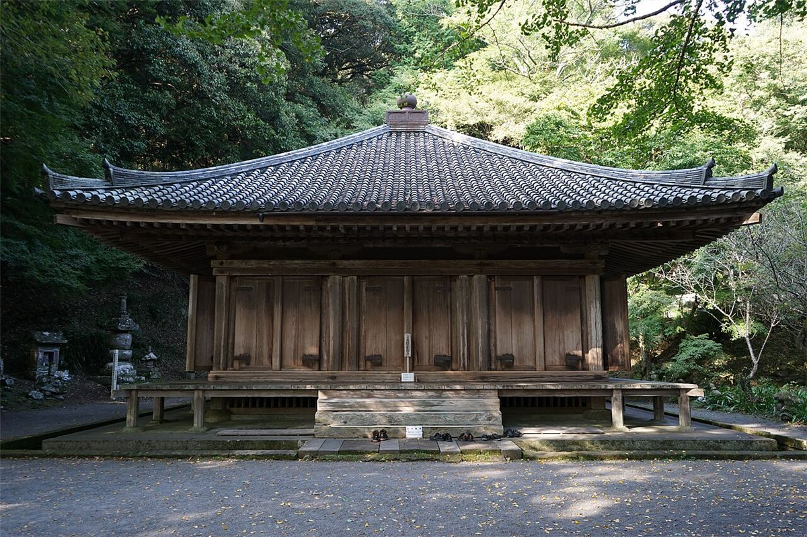
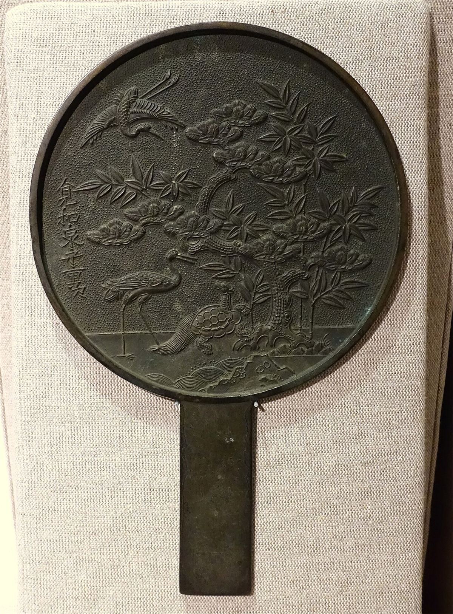

お店について

髪結屋 心
髪結屋 心は、大分県豊後高田市新町2825-2にある美容室です。Instagramもご覧いただけます。
お店の紹介・特長は、準備中（お問い合わせください）
詳しくは、お電話でお問い合わせください。
店舗情報
手仕事のイメージ
ハサミや鏡など、美容室を思わせる素材のイメージです。


この町のイメージ写真
豊後高田の景色をイメージとして掲載しています。


お店との距離や位置関係を示すものではありません。

髪結屋 心は、大分県豊後高田市新町2825-2にある美容室です。Instagramもご覧いただけます。
お店の紹介・特長は、準備中（お問い合わせください）
詳しくは、お電話でお問い合わせください。
ハサミや鏡など、美容室を思わせる素材のイメージです。

豊後高田の景色をイメージとして掲載しています。
お店との距離や位置関係を示すものではありません。
写真はフリー素材のイメージです。実際のお店・施術とは異なります。
電話する0978-25-4441